Рисунок 15. "Вылетание" пропорционально-интегрального управления
Введение
Алгоритмы ПИД (PID = proportional, integral, derivative) управления не так сложны, как кажется некоторым с первого взгляда. В этой статье мы попробуем рассказать как они работают на нескольких простых примерах. Изучив эти примеры, вы сможете самостоятельно применять эти алгоритмы в своих проектах.
Моя профессиональная деятельность непосредственно связана с реализацией управляющих циклов в программном обеспечении для различных устройств. Исходя из накопленного опыта, могу сказать, что несмотря на огромное количество алгоритмов и методов управления, которыми я владею - большая часть проблем такого сорта решается простейшими контроллерами без привлечения полного аппарата теории управления. В этой статье я расскажу, как реализовать и настроить простейший контроллер использующий ПИД-алгоритм без привлечения сложного математического аппарата и длительного изучения теории управления. Приведенная в статье техника настройки контроллера является проверенным и зарекомендовавшим себя методом, который можно успешно применять на большинстве задач управления.
ПИД управление
PID=ПИД означает "proportional=пропорциональный", "integral=интегральный", "derivative=дифференциальный". Эти три термина описывают простейшие элементы ПИД-контроллера. Каждый из этих элементов выполняет свою задачу и оказывает свое специфическое воздействие на функционирование системы.
В типичном ПИД-контроллере эти элементы оперируют комбинацией как входных управляющих параметров, так и сигналами обратной связи с управляемого устройства (объекта управления, далее просто - устройство). Выходы этих элементов складываются между собой и формируют управляющий сигнал для устройства.
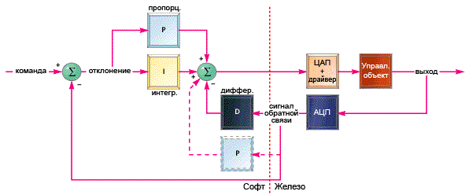
Рисунок 1. Простейший ПИД-контроллер
В приведенном на рисунке примере дифференциальный элемент оперирует только сигналом обратной связи от устройства. Этот сигнал вычитается из сигнала управляющего воздействия и полученная разность считается ошибкой управления. Эта разность подается на вход пропорциональному и интегральным элементам, получающиеся на их выходах сигналы складываются между собой и формируют управляющий сигнал. Я не описывал принцип работы этих элементов - мы вернемся к этому чуть позже. На схеме я указал альтернативный вариант включения пропорционального элемента (пунктиром) - оптимальную схему включения можно выбрать только на конкретном устройстве и задаче управления.
Объекты управления
Чтобы в обсуждении темы не уходить далеко от реальных задач нам понадобятся типичные объекты управления. В этой статье я буду использовать для примеров следующие три устройства, и покажу как на них будут работать те или иные алгоритмы ПИД-управления:
Каждая из этих систем имеет различные характеристики и требует различных подходов в управлении для достижения оптимальных результатов.
Двигатель с редуктором
Первым рассмотрим двигатель с редуктором, на выходном валу которого установлен потенциометр или любой другой датчик положения вала. Такое решение применяется в устройствах позиционирования печатной головки в струйных принтерах, или в системе управления дроссельной заслонкой в автомобильной системе круиз-контроля (поддержание заданной скорости на трассе), или в любой другой современной системе управления точным позиционированием.
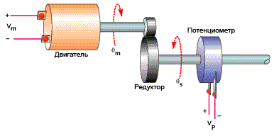
Рисунок 2. Схема управления двигателем с редуктором
Двигатель управляется уровнем напряжения задаваемым управляющим алгоритмом. Усилие через редуктор поступает на его выходной вал и приводит в действие некоторый механизм. На выходном валу находится потенциометр, через который алгоритм управления получает информацию о положении выходного вала.
Коллекторный двигатель постоянного тока вращается с постоянной скоростью пропорциональной поданному напряжению. Реальный двигатель с редуктором не может мгновенно изменять скорость вращения, поэтому между подачей на двигатель напряжения и установлением соответствующей скорости существует некоторая задержка. Редуктор в этой схеме просто умножает скорость вращения двигателя на некоторую константу.
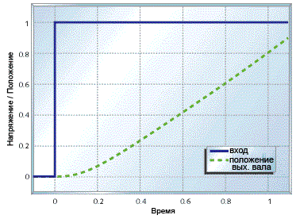
Рисунок 3. График положения вала при старте
На рисунке показано поведение системы при подаче некоторого фиксированого напряжения в момент времени t = 0 (мы рассматриваем общие примеры, поэтому примем напряжение в 1). Из графика видно, что мотор не сразу набирает соответствующую напряжению скорость, но после того, как набрал (при t=0.2), дальше он её поддерживает.
Бесконтактная система сверхточного позиционирования
В некоторых случаях необходимо с сверхвысокой точностью управлять положением некоторого объекта. Систему, решающую эту задачу, можно построить из свободно перемещающейся механической платформы, пары "катушка + магнит" (аналогичной применяющимся в громкоговорителях) и бесконтактного датчика положения. Такие решения применяются в механизмах оптической стабилизации в фото/видеотехнике, или в других системах, где нужно с высокой точностью перемещать небольшой элемент устройства.
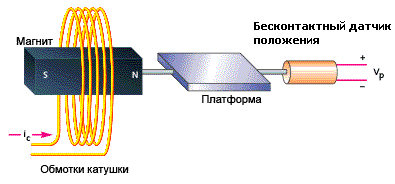
Рисунок 4. Бесконтактная система сверхточного позиционирования
Программное обеспечение управляет подачей тока на обмотки катушки, который создает магнитное поле соответствующей плотности и направления, которое втягивает или выталкивает магнит вместе с платформой, на которой он закреплен. Обратную связь по положению платформы обеспечивает бесконтактный датчик.
При таком устройстве сила, прикладываемая к магниту не зависит от положения платформы и её движения. Плюс этого в том, что платформа ни от каких других воздействий не движется относительно всего устройства, а минус в том, что платформа становится очень неустойчивой, что затрудняет задачу управления. В добавок к этом нам окажется необходим усилитель с большим выходным током и высокоточный бесконтактный датчик, что тоже может создать дополнительные трудности в проекте. Создание качественной и надежной системы такого типа достаточно проблемно без применения высокоточного оборудования и тщательного проектирования.
Уравнения, описывающие движение такой системы достоточно просты. Сила, действующая на платформу пропорциональна только уровню напряженности магнитного поля, а значит силе тока, протекающего через катушку. Таким образом ускорение платформы прямо пропорционально управляющему воздействию. График движения платформы при подаче фиксированного ненулевого управляющего воздействия это парабола:
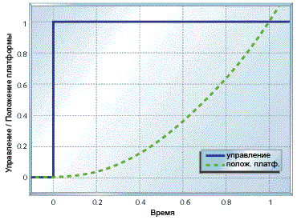
Рисунок 5. График движения при фиксированном воздействии
Как мы увидим позже - такое поведение платформы создаст дополнительные проблемы, ввиду инертности, из-за которой она не сразу начинает двигаться, а также стремится продолжить начатое движение.
Термосистема
В этом примере вместо двигателя мы будем использовать нагреватель.
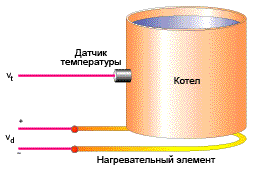
Рисунок 6. Типичная термосистема
Котел снабжен электрическим нагревателем, температура содержимого котла отслеживается с помощью соответствующего датчика температуры.
Вообще, математические модели термосистем достаточно сложны, однако, в нашем примере мы примем значительно упрощенную модель поведения такой системы. В той части случаев, когда вам не нужно получить выдающихся результатов обычно можно пользоваться менее точными моделями.
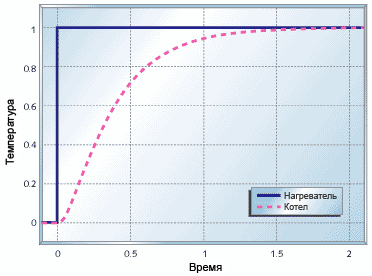
Рисунок 7. График поведения термосистемы при нагреве котла
Рисунок 7 показывает зависимость поведения системы от изменения Vd. Как видно в итоге система приходит к требуемому состоянию, но это занимает очень много времени. Кроме того, без значительной теплоизоляции термосистемы очень чуствительны к внешнему воздействию. Этот эффект не показан в приведенном примере, но мы в этой статье позже рассмотрим его подробней.
Элементы контроллера
Элементы представляемого здесь ПИД-контроллера получают вход либо с датчика состояния управляемой системы, либо с датчика отклонения состояния системы от требуемого. Я буду писать код управляющего контроллера используя арифметику с плавающей точкой, чтобы не отвлекаться в этой статье на вопросы технической реализации, если вам нужно - вы можете легко адаптировать все приведенные здесь примеры к арифметике с фиксированной точкой.
Я буду предполагать, что всё функция управления будет определена нижеуказанным способом. По мере продвижения по тексту статьи вы увидите, как будет вырисовываться содержимое передаваемой структуры данных и внутренности функции.
double UpdatePID(SPid * pid,
double error, double position)
{
.
.
.
}
Причина по которой я передаю в процедуру управления отклонение от целевого состояния, а не состояние системы заключается в том, что иногда нам будет полезно как-то "поиграть" с этим параметром (речь идет о том, что регулятор не сам рассчитывает отклонение error, а оно передается извне, так как может быть вычеслено не простой разностью, а иначе - примечание переводчика). Поэтому оставление рассчета отклонения в основном коде, вне нашей функции, делает нашу функцию более универсальной. В коде эта функция может быть использована, например, так:
.
.
position = ReadPlantADC();
drive = UpdatePID(&plantPID, plantCommand - position, position);
DrivePlantDAC(drive);
.
.
Пропорциональное управление
Пропорциональное управление является самым легким в реализации и наиболее часто используется в управляющих циклах. В этом режиме контроллер просто берет отклонение, умножает его на константу и выдает его в качестве управляющего воздействия. Пропорциональный компонент в контроллере рассчитывается кодом следующего вида:
double pTerm;
.
.
.
pTerm = pid->pGain * error;
.
.
.
return pTerm;
Рисунок 8 показывает что происходит, когда пропорциональное управление применяется к системе двигателя с редуктором.
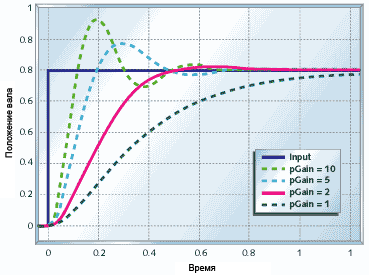
Рисунок 8. Пропорциональное управление двигателем с редуктором
Для малого значения коэффициента (pGain = 1) двигатель приходит к нужному положению, но достаточно медленно. Увеличение коэффициента (pGain = 2) приводит к более быстрой реакции системы. Однако если дальше увеличивать коэффициент (pGain = 5, pGain = 10), то двигатель конечно более быстро достигает требуемого положения, но дальше идёт "перелёт" (общепринятый термин которым обозначается этот эффект в ТАУ - "Перерегулирование", примечание переводчика), из-за чего система не приходит к требуемому положению быстрее, чем при меньших коэффициентах. Если мы продолжим увеличивать коэффициент, то мы достигнем ситуации, когда система станет бесконечно осциллировать (колебаться) вокруг заданной точки и никогда не придет в нужное состояние.
Система двигателя с редуктором "перелетает" необходимое положение при больших коэффициентах из-за задержки с реакцией на управляющее воздействие. Если вы вернетесь к рисунку 2, то вы увидите, что двигатель не сразу начинает вращаться при подаче на него управляющего сигнала. Эта задержка, плюс задержка обратной связи по датчику - вот что приводит к "перелёту" через требуемое положение на рисунке 8 (возможно более понятным будет следующее объяснение: перерегулирование связано с инерцией мотора и редуктора - прим. переводчика).
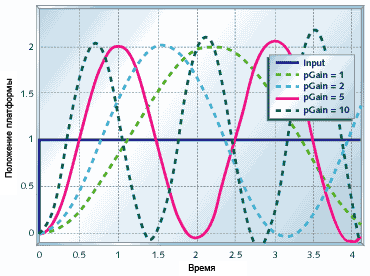
Рисунок 9. Пропорциональное управление системой сверхточного позиционирования
Рисунок 9 показывает как действует пропорциональное управление на систему сверхточного поцизионирования. Как видно этот метод управления в чистом виде вообще не помогает в случае этой задачи. Система обладает настолько большой задержкой восприятия управляющего воздействия, что неважно насколько малый коэффициент вы выберите - система всё равно будет осциллировать. С ростом коэффициента просто увеличивается частота колебаний, но система не приходит в требуемое состояние.
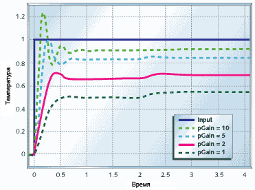
Рисунок 10. Пропорциональное управление термосистемой
Рисунок 10 показывает что происходит, когда вы строите контроллер температуры на основе метода пропорционального управления. Кроме всего прочего на графиках я показал реакцию системы на внешнее воздействие в виде повышения температуры окружающей среды в момент времени t=2с. Однако видно, что независимо от этого воздействия пропорциональное управление не позволяет установить желаемую температуру. Увеличение коэффициента помогает, но даже при pGain=10 температура котла остается ниже требуемой, и вы начинаете наблюдать сильные "перелёты" через требуемую величину, которые продолжаются без конца (это называется "ringing").
Как видно из приведенных выше примеров пропорцинальное управление даже в одиночку может быть полезно для ряда задач, однако так происходит не всегда. Системы в которых существует значительная задержка реакции на управляющее воздействие, такие как система сверхточного позиционирования, не могут быть стабилизированы с помощью этого метода. Некоторые системы, типа рассмотренного контроллера температуры вообще не достигают требуемого положения. Системы типа двигателя с редуктором вполне работоспособы под таким управлением, но может потребоваться меньшее время вывода системы на требуемое состояние. Чтобы решить все эти проблемы нам потребуется добавить интегральную или дифференциальную составляющу, или обе одновременно.
Интегральное управление
Интегральное управление используется, чтобы добавить "долгосрочной точности" управляющему циклу. Оно практически всегда используется совместно с пропорциональным управлением.
Реализующий интегратор код приведен ниже. Состояние интегратора iState является суммой всех предыдущих входов. Параметры iMin и iMax это минимально и максимально разрешенные значения состояния интегратора.
double iTerm;
.
.
.
// calculate the integral state
// with appropriate limiting
pid->iState += error;
if (pid->iState > pid->iMax)
pid->iState = pid->iMax;
else if (pid->iState < pid->iMin)
pid->iState = pid->iMin;
iTerm = pid->iGain * iState;
// calculate the integral term
.
.
.
Интегральное управление само по себе обычно снижает стабильность системы или вообще делает систему нестабильной.
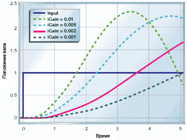
Рисунок 11. Интегральное управление двигателем с редуктором
На рисунке 11 приведены результаты управления двигателя с редуктором контроллером реализующим чисто интегральное управление (pGain = 0). Как видно система вообще не стабилизируется. Как и в случае с системой сверхточного позиционирования с пропорциональным управлением у двигателя с редуктором под чистым интегральным управлением колебания будут становиться только больше и больше, пока это во что-нибудь не упрётся (хорошо если это будет программное ограничение, а не разрушение механической системы).
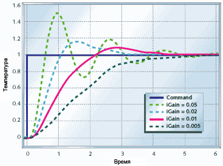
Рисунок 12. Интегральное управление термосистемой
Рисунок 12 показывает как себя ведёт термосистема под чистым интегральным управлением. Как видно время стабилизации системы стало значительно больше, чем при пропорциональном управлении (см. рисунок 10), но зато теперь система стабилизируется при требуемом состоянии, даже при некоторых внешних воздействиях. Если вам не требуется малое время выхода на требуемое состояние - этот метод вам вполне подойдет.
Из последнего графика ясно, как используется интегральный компонент управления. В состоянии интегратора "запоминается" всё что произошло в предыдущие моменты времени и это позволяет контроллеру избегать "долгосрочных ошибок", т.е. поведения при котором мы видим что не достигли требуемого положения, а никакого управляющего воздействия не вносим. Однако у этой медали есть и обратная сторона - контроллер всегда реагирует с некоторым запозданием, когда система уже длительное время получает совершенно неправильные команды. Чтобы стабилизировать предыдущие две системы нам потребуется добавить в принятие решения немного информации о текущем состоянии системы, которое мы имеем в пропорциональной компоненте.
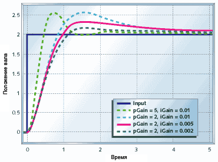
Рисунок 13. Пропорционально-интегральное управление двигателем с редуктором
Рисунок 13 показывает как ведёт себя двигатель с редуктором под пропорционально-интегральном (ПИ) управлением. Сравните это с рисунками 8 и 11. Время на стабилизацию увеличилось по сравнению с чисто пропорциональной схемой, но стабилизация идёт в правильное положение, которое и требовалось.
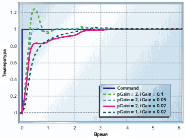
Рисунок 14. Пропорционально-интегральное управление термосистемой
Рисунок 14 показывает, что будет происходить, если применить к термосистеме ПИ-управление. Котёл так же придёт к требуемой температуре, как и в случае чистого интегрального управления (см. рисунок 12), но с ПИ-управлением произойдёт это в два-три раза быстрее. График показывает время стабилизации до требуемой температуры близкое к возможному пределу достигаемому с помощью ПИ-регуляторов на такого типа системах.
Перед тем, как мы закончим рассматривать интеграторы, я хотел бы указать на следующие два важных момента. Во-первых, так как вы добавили интеграцию отклонения по времени, становится важным частота с которой вы запускаете цикл управления. Во-вторых нужно быть внимательным к допустимому диапазону значений интегратора, чтобы избежать "вылетания".
Скорость изменения состояния интегратора равна среднему отклонению умноженному на коэффициент интегратора умноженному на частоту цикла управления. Так как интегратор сглаживает замеры отклонения по времени, допустимы некотороые отклонения от нормальной частоты вызова управляющего цикла, но в любом случае эти отклонения должны быть чем-то ограничены. В худшем случае рекомендуется, чтобы частота вызова цикла управления не отклонялась более чем на 20% на каждом участке из 10 вызовов. Иногда лучше пропустить часть значений, чтобы сохранить требуемую частоту вызова управляющего цикла. Однако несмотря на это я для ПИ-контроллера предпочитаю системы, в которых точность вызова цикла управления лежит в пределах 1-5%.
Если вашему контроллеру требуется значительно изменить состояние управлямой системы, которе не может быть произведено за короткое время - тогда всё это время отклонение будет велико и это огромное отклонение накопится в состоянии интегратора, что вызовет в свою очередь его "вылетание". Когда система достигнет своего целевого положения в интеграторе будет находится огромное накопленное отклонение, которое вызовете дальнейший значительный "перелёт" через требуемое положение и система так же значительное время будет продолжать двигаться уже за пределами целевого значения. В лучшем случае это будут затухающие колебания, в худшем - система никогда не стабилизируется и будет осциллировать с огромной амплитудой.
Рисунок 15. "Вылетание" пропорционально-интегрального управления
Рисунок 15 показывает эффект "вылетания" интегратора. Я использовал двигатель с редуктором и контроллер с примера рисунка 13 и ограничил скорость мотора до 0.2. Не только контроллер выдаёт управляющий сигнал, который не может быть реализован двигателем, но и вся система показывает значительный "перелёт". Реально требуемое положение достигается за 5 секунд, он обратный сигнал не подаётся еще в течение 3 секунд, поскольку в интеграторе еще осталось накопленное отклонение, указывающее на то, что надо продолжать двигаться вперёд, и проходит порядка 15 секунд, пока система не стабилизируется.
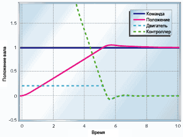
Рисунок 16. Ограничение "вылетания" пропорционально-интегрального управления
Простейший и самый прямой способ борьбы с "вылетанием" интегратора это установка ограничений на его накопленное значение, как я показал в примере кодирования такого интегратора. Рисунок 16 показывает что происходит когда в приведенных выше условиях на интегратор наложены ограничения в размере максимально допустимого управляющего воздействия на двигатель (iMin=-0.2, iMax=0.2). Выход контроллера всё еще больше допустимого для двигателя (из-за пропорциональной части), но теперь интегратор "вылетает" значительно меньше и система начинает стабилизироваться на 5-й секунде и заканчивает примерно на 6-й секунде.
Обратите внимание, что в примерах указанных выше надо масштабировать iMin и iMax, если вы изменяете коэффициент интегратора (iGain). Обычно достаточно установить ограничения значиний минимума и максимума интегратора такие, чтобы интегрирующий компонент управления выдавал соответственно минимальное и максимальное управляющее воздействие. Если вы знаете, что вам потребуется еще более малые интегрирующий компонент - вы можете еще больше ограничить значения интегратора.
Дифференциальное управление
Я не стал рассматривать сверхточное позиционирование в предыдущем разделе по той причине, что эту систему нельзя стабилизировать с помощью ПИ-управления. В общем если вы не можете стабилизировать какую-то систему с помощью пропорционального управления из-за слишком большой задержки воздействия на систему, тогда при использовании ПИ-управления увеличивающего эту задержку всё станет только хуже.
Мы знаем что пропорциональное управление соответствует использованию "сиюминутной" информации о системе, интегральное управление использует информацию о "прошлом" системы. Если бы мы получили элемент который соответствует использованию "прогнозной" информации о системе, мы смогли бы попробовать использовать его для стабилизации нашей платформы в системе сверхточного позиционирования. И таким искомым элементом является дифференциатор.
Код приведенный ниже показывает, как рассчитывается дифференциальная компонента ПИД-контроллера. Я предпочитаю использовать текущее состояние системы, а не отклонение от требуемого положения для мягкости управления при резкой смене целевого состояния системы. Дифференциальная компонента сама по себе представляет разность между предыдущим состоянием системы и текущим её состоянием. Это даёт нам возможность оценить скорость изменения состояния системы и предугадать в каком состоянии окажется система в следующий момент времени.
double dTerm;
.
.
.
dTerm = pid->dGain * (position - pid->dState);
pid->dState = position;
.
.
.
При использовании дифференциальной компоненты становится возможным стабилизация платформы в системе сверхточного позиционирования.
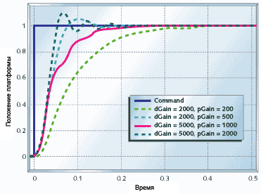
Рисунок 17. Пропорционально-дифференциальное управление системой сверхточного позиционирования
Рисунок 17 показывает как ведёт себя эта система под пропорционально-дифференциальным (ПД) управлением. Система стабилизируется меньше чем за 1/2 секунды по сравнению с несколькими секундами требующимися для других систем.

Рисунок 18. ПИД-управление термосистемой
Рисунок 18 показывает как себя ведёт термосистема под ПИД-управлением. Как видно из графиков этот подход существенно улучшает качество управления системой.
Дифференциальная компонента управления очень мощная, но она же и самая проблемная из всех типов управления представленных здесь. Три проблемы с которыми придётся столкнуться при реализации этого типа управления - нерегулярность частоты сбора данных, шумы и высокочастотные колебания. Когда я представлял код для дифференциального элемента я предположил, что выход управляющего воздействия должен быть пропорционален изменению положения деленному на время между итерациями цикла управления. Если состояние системы меняется с постоянной скоростью, а время между запуском управляющей итерации варьируется, вы будете получать неверную информацию о скорости системы. Поскольку обычно время между итерациями управления достаточно мало, шумы такого сорта могут быть очень значительными и будут сильно мешать задаче управления.
Когда вы используете дифференциальное управление нужно обращать внимание на точность временных интервалов между итерациями управляющего цикла. Я рекомендую поддерживать точность этих интервалов в пределах 1%, однако чем точнее, тем лучше. Если вы не можете обеспечить это на аппаратном уровне - постарайтесь сделать это на уровне программного обеспечения, отдав под задачу сбора информации максимальный приоритет (не нужно с такой точностью выполнять расчеты управляющего воздействия, достаточно собирать информацию в нужные моменты времени). Один из оптимальных вариантов - поместить сбор информации о системе в прерывание, а сами расчеты ПИД-алгоритма выполнять в свободное время.
Дифференциальное управление страдает от шумов больше других типов управления потому что оно эти шумы усиливает, в отличие от пропорционального управления, которое просто транслирует эти шумы или интегрального, которое вообще шумы подавляет. Посмотрите на коэффициенты дифференциальной компоненыт, которые я использовал выше и представьте, что произойдёт если у вас в системе будут небольшие шумы, которые возникать при каждом получении информации о системе. Умножьте эти небольшие шумы на коэффициент 2000 и представьте как это отразится на системе.
Вы можете применить фильтрацию дифференциальной компоненты управления, но это существенно снизит её полезность. Теория стоящая за тем, как это делать и как опредилить - будет ли это работать останется за рамками этой вводной статьи. Возможно лучшее, что вы можете сделать с этой проблемой - оценить насколько велики у вас шумы при получении информации о состоянии системы и насколько вам надо ускорение стабилизации системы с помощью дифференциальной компоненты и исходя из этого установить коэффициент этой компоненыт (dGain). Возможно вам вообще придётся отказаться от этой компоненты или еще можно попробовать переработать электронику так, чтобы снизить шумы или попробовать применить более сложные алгоритмы управления (обратиться к экспертам по автоматизированному управлению).
Полный код ПИД-контроллера:
typedef struct
{
double dState; // Last position input
double iState; // Integrator state
double iMax, iMin;
// Maximum and minimum allowable integrator state
double iGain, // integral gain
pGain, // proportional gain
dGain; // derivative gain
} SPid;
double UpdatePID(SPid * pid, double error, double position)
{
double pTerm, dTerm, iTerm;
pTerm = pid->pGain * error; // calculate the proportional term
pid->iState += error; // calculate the integral state with appropriate limiting
if (pid->iState > pid->iMax)
pid->iState = pid->iMax;
else if (pid->iState < pid->iMin)
pid->iState = pid->iMin;
iTerm = pid->iGain * iState; // calculate the integral term
dTerm = pid->dGain * (position - pid->dState);
pid->dState = position;
return (pTerm + iTerm - dTerm);
}
Настройка ПИД-регулятора
ПИД-регуляторы замечательны тем, что для их хорошей настройки не требуется отличного понимания формальной теории управления системами. При этом они позволяют решить около 90% всех задач управления простыми системами замкнутого цикла.
Если можете, подцепите ваш контроллер к тестовому оборудованию или напишите отладочный код, чтобы можно было видеть, что происходит внутри, если возможно - соедините контроллер с ПК по последовательному порту и выведите отладочные графики в какой-нибудь программе, например в Excel. Кроме этого вам потребуется какой-то способ ступенько-образного задания управляюшего сигнала. Вполне может подойти опять же отладочный код, который будет брать управляющий сигнал скажем с последовательного порта. Как только вы закончили все приготовления установите все коэффициенты в 0. Если вы полагаете, что вам не нужно будет дифференциальную компоненту (как в случае с двигателем или термосистемой), пропустите следующую секцию и сразу приступайте к настройке пропорциональной компоненты. Иначе начинаем с настройки коэффициента дифференциального управления.
Настройка дифференциальной компоненты
Перед настройкой дифференциального управления выставьте коэффициент пропорционального управления в какое-нибудь небольшое значение (1 или немного меньше). Посмотрите как себя ведёт система. Если она колеблется при нулевом коэффициенте дифференциальной компоненты, тогда это можно исправить увеличением этого коэффициента. При постепенном увеличении смотрите как себя ведёт система, увеличиваейте коэффициент пока не увидите возникающие из-за малых шумов системы ошибочные колебания и вылеты по этой же причине за целевые значения. Обратите внимение, что колебания от слишком большого коэффициента значительно быстрее, чем колебания от недостаточного коэффициента. Я стараюсь устанавливать коэффициент в половину или четверть от того, при котором начинаются колебания от слишком большой его величины. Убедитесь что при этом управляющий сигнал выглядит адекватным. В этот момент система реагирует на управляющее воздействие очень лениво, так что самое время настроить пропорциональный и интегральный коэффициенты.
Настройка пропорциональной компоненты
Если вы еще не установили коэффициент пропорциональной компоненты, назначьте ему некоторое стартовое значение (от 1 до 100). Ваша управляемая система либо покажет ужасающе медленную реакцию на команды, либо начнет колебания. Если вы видите колебания - уменьшайте коэффициент в 10 раз, пока эти колебания не прекратятся. Если вы не наблюдаете колебания, увеличивайте коэффициент в 10 раз пока не начнутся колебания или значительные "перелёты" через целевое положение. Теперь уже с коэффициентом 2 найдите такой коэффициент, что он всё еще не вызывает колебаний или "перелётов", а умноженный на 2 уже вызывает, теперь можно немного его уменьшить пока вам не понравится действие системы.
Настройка интегральной компоненты
И наконец мы можем приступить к настройке коэффициента интегральной компоненты, начальные значения коэффициента рекомендуется брать от 0.0001 до 0.01. Ищем нужное нам значение так же как с пропорциональным коэффициентом, так же отступая немного назад, чтобы гарантированно не получить колебания от слишком большого коэффициента.
Замечания
Оптимизация производительности ПИД-регулятора
Если вы не работаете над проектом в котором критически важно получить максимальную эффективность управления, тогда вам почти всегда будет достаточно найти коэффициенты ПИД-регулятора не более чем в 2 раза отличающиеся от оптимальных. Это означает что на совсем слабых микроконтроллерах без аппаратного умножителя вы сможете использовать побитовый сдвиг вместо умножения.
Частота сбора данных и выполнения цикла управления
Мы уже обсуждали как важен этот параметр, но до этого мы обсуждали как важно чтобы он был стабильным, однако ничего не говорили о том, каким он должен быть. Если она слишком маленькая, тогда вы не сможете получить нужную вам эффективность и более того можете получить систему, которую невозможно стабилизировать. Если же вы возьмете слишком большую частоту - вы получите серьезные шумы в дифференциальное компоненте и переполнение состояния интегратора.
Есть простое правило для цифровых управляющих систем, которое гласит, что продолжительность итерации управляющего цикла должна быть между 1/10 и 1/100 желаемого времени стабилизации системы в новом положении. Если вы посмотрите на рисунок 16, там это время порядка 6.2с. Если время принятия системой нового положения нужно 1с, тогда вас может устроить частота даже такая низкая, как 10Гц.
Вообще часто ряд проблем с управлением снимается, если вы повышаете эту частоту, может оказаться так, что в этом случае даже можно будет отказаться от дифференциальной компоненты управления. Так что если у вас нет дифференциальной компоненты и достаточно длины числа под состояние интегратора - делайте частоту хоть в 1/1000 от желаемого времени стабилизации системы.
Послесловие
Статья преподносит основы разработки и настройки ПИД-контроллеров. Используя эту информацию вы сможете взяться за задачу управления и реализовать необходимую для неё систему управления.
Tim Wescott является магистром электро инжинерии и более 10 лет проработал в это индустрии. Его опыт включает множество систем управления замкнутого цикла реализованных на 8-32 битных контроллерах, сигнальных процессорах, как на ассемблере, так и на C\C++. На момент написания статьи он участвовал в разработке систем управления компании FLIR Systems в которой он определял требования к механической, электрической и программной части. Вы можете связаться с ним по адресу tim@wescottdesign.com.